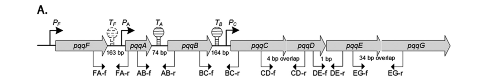

pqqF (PP_0381, Q88QV3) encodes a zinc-dependent peptidase M16-family metalloendopeptidase required for pyrroloquinoline quinone (PQQ) biosynthesis in P. putida KT2440. It lies in the chromosomal PQQ biosynthesis locus organized pqqFABCDEG, where pqqF is transcribed independently of the core pqqCDEG module. By analogy to characterized orthologs (Serratia sp. FS14 PqqF; the Methylorubrum extorquens AM1 two-component PqqF/PqqG M16B protease), PqqF is a proteolytic processing factor that acts on the ribosomally synthesized PQQ precursor peptide PqqA, cleaving it to help liberate the Glu/Tyr-derived intermediate that downstream enzymes convert to PQQ. PqqF essentiality varies across bacteria and may be substituted by nonspecific cellular proteases in some species. No KT2440-specific biochemical assay of Q88QV3 has been reported; functional assignments are inferences from family, structure, and high-confidence orthologs.
| GO Term | Evidence | Action | Reason |
|---|---|---|---|
|
GO:0004222
metalloendopeptidase activity
|
IEA
GO_REF:0000120 |
ACCEPT |
Summary: This is the best current molecular-function annotation for PqqF. UniProt assigns PqqF to the peptidase M16 family with a bound zinc ion, and the GOA record maps it to metalloendopeptidase activity. Deep research confirms that characterized PqqF orthologs are zinc-dependent M16-family metallopeptidases that act on the PQQ precursor peptide PqqA (Serratia FS14 crystal structure; Methylorubrum two-component PqqF/PqqG protease).
Reason: The peptidase M16 family assignment, the conserved Zn-binding/active-site residues, and direct biochemical/structural evidence from PqqF orthologs all support a zinc metalloendopeptidase function in PQQ maturation.
Supporting Evidence:
file:PSEPK/pqqF/pqqF-uniprot.txt
Belongs to the peptidase M16 family.
file:PSEPK/pqqF/pqqF-goa.tsv
GO:0004222 metalloendopeptidase activity
file:PSEPK/pqqF/pqqF-deep-research-falcon.md
PqqF/PqqG are **M16-family zinc metallopeptidases** acting on the PQQ precursor peptide PqqA
|
|
GO:0006508
proteolysis
|
IEA
GO_REF:0000002 |
KEEP AS NON CORE |
Summary: Proteolysis is directionally correct for an M16 metalloendopeptidase that cleaves the PqqA precursor peptide, but it is too broad to represent the core biological role of this pathway enzyme. The informative biological process is pyrroloquinoline quinone biosynthesis, within which the proteolytic step liberates the PQQ precursor.
Reason: The more informative biological process is pyrroloquinoline quinone biosynthesis; generic proteolysis captures only the chemistry, not the pathway context in which PqqF processes PqqA.
Supporting Evidence:
file:PSEPK/pqqF/pqqF-uniprot.txt
Belongs to the peptidase M16 family.
file:PSEPK/pqqF/pqqF-goa.tsv
GO:0006508 proteolysis
file:PSEPK/pqqF/pqqF-deep-research-falcon.md
zinc-dependent M16-family endopeptidase that participates in **processing the PqqA precursor peptide**
|
|
GO:0008270
zinc ion binding
|
IEA
GO_REF:0000002 |
KEEP AS NON CORE |
Summary: Zinc ion binding is consistent with the metalloendopeptidase assignment and should be retained as a non-core cofactor-binding annotation. UniProt records one zinc ion bound per subunit with conserved Zn-coordinating residues, and characterized PqqF orthologs are zinc-dependent M16 metallopeptidases.
Reason: The core function is the pathway metalloendopeptidase activity, with zinc binding as a supporting cofactor feature required for catalysis.
Supporting Evidence:
file:PSEPK/pqqF/pqqF-uniprot.txt
COFACTOR:
file:PSEPK/pqqF/pqqF-goa.tsv
GO:0008270 zinc ion binding
file:PSEPK/pqqF/pqqF-deep-research-falcon.md
PqqF/PqqG are **M16-family zinc metallopeptidases** acting on the PQQ precursor peptide PqqA
|
|
GO:0018189
pyrroloquinoline quinone biosynthetic process
|
IEA
GO_REF:0000120 |
ACCEPT |
Summary: This is the correct core process annotation. PqqF is explicitly required for coenzyme PQQ biosynthesis, is part of the UniPathway PQQ pathway, and lies within the KT2440 PQQ biosynthesis locus organized pqqFABCDEG. The GO definition of PQQ biosynthesis itself notes that PQQ is made from a small peptide whose remaining residues are removed, which is precisely the proteolytic role attributed to PqqF acting on PqqA.
Reason: The pathway-specific PQQ biosynthesis term captures the physiological context of the peptidase activity; deep research places PqqF within the canonical pqqFABCDEG locus and the PqqA-processing step of PQQ maturation.
Supporting Evidence:
file:PSEPK/pqqF/pqqF-uniprot.txt
Required for coenzyme pyrroloquinoline quinone (PQQ)
file:PSEPK/pqqF/pqqF-uniprot.txt
PATHWAY: Cofactor biosynthesis; pyrroloquinoline quinone biosynthesis.
file:PSEPK/pqqF/pqqF-goa.tsv
GO:0018189 pyrroloquinoline quinone biosynthetic process
file:PSEPK/pqqF/pqqF-deep-research-falcon.md
pqqFABCDEG
|
|
GO:0046872
metal ion binding
|
IEA
GO_REF:0000002 |
MARK AS OVER ANNOTATED |
Summary: Metal ion binding is overly broad once zinc ion binding and metalloendopeptidase activity are present. The specific cofactor is a single zinc ion per subunit.
Reason: Prefer the more specific zinc ion binding term for the cofactor feature; generic metal ion binding adds no information beyond GO:0008270.
Supporting Evidence:
file:PSEPK/pqqF/pqqF-goa.tsv
GO:0046872 metal ion binding
file:PSEPK/pqqF/pqqF-goa.tsv
GO:0008270 zinc ion binding
|
Q: What is the direct PqqF substrate in KT2440 PQQ biosynthesis, and does it process the cross-linked PqqA-derived intermediate, with or without a PqqG partner?
Experiment: Compare PqqA-derived peptide fragments and PQQ accumulation in wild-type, pqqF deletion, and catalytic-site (Zn-binding) mutant strains using targeted LC-MS/MS, paralleling the in vitro PqqA cleavage assays established for the Methylorubrum extorquens PqqF/PqqG protease.
Hypothesis: PqqF is the zinc metalloendopeptidase that processes PqqA-derived intermediates during KT2440 PQQ maturation.
Type: genetics plus peptidomics
The research report should be a detailed narrative explaining the function, biological processes, and localization of the gene product. Citations should be given for all claims.
You should prioritize authoritative reviews and primary scientific literature when conducting research. You can supplement
this with annotations you find in gene/protein databases, but these can be outdated or inaccurate.
We are specifically interested in the primary function of the gene - for enzymes, what reaction is catalyzed, and what is the substrate specificity? For transporters, what is the substrate? For structural proteins or adapters, what is the broader structural role? For signaling molecules, what is the role in the pathway.
We are interested in where in or outside the cell the gene product carries out its function.
We are also interested in the signaling or biochemical pathways in which the gene functions. We are less interested in broad pleiotropic effects, except where these elucidate the precise role.
Include evidence where possible. We are interested in both experimental evidence as well as inference from structure, evolution, or bioinformatic analysis. Precise studies should be prioritized over high-throughput, where available.
The target protein is PqqF, annotated as “Coenzyme PQQ synthesis protein F” in Pseudomonas putida strain KT2440 (ATCC 47054/DSM 6125/NCIMB 11950). In KT2440, a dedicated PQQ biosynthesis gene region contains the gene order pqqFABCDEG, and pqqF is explicitly included in this locus and experimentally examined at the transcript level, confirming the symbol-to-function context (PQQ locus gene) in the correct organism (KT2440) (Aug 2016) https://doi.org/10.1128/aem.00813-16 (an2016regulationofpyrroloquinoline pages 3-5, an2016regulationofpyrroloquinoline pages 1-2). This matches the UniProt-provided family expectation that PqqF is a metalloendopeptidase implicated in PQQ biogenesis; primary structural/biochemical work in other bacteria shows PqqF/PqqG are M16-family zinc metallopeptidases acting on the PQQ precursor peptide PqqA (Jul 2016; Oct 2019) https://doi.org/10.1074/jbc.m115.711226 ; https://doi.org/10.1074/jbc.ra119.009684 (wei2016crystalstructureand pages 1-2, martins2019atwocomponentprotease pages 2-3).
Ambiguity check: The symbol pqqF is used across diverse bacteria with variable operon structures; however, the KT2440 locus content and co-location with canonical pqq genes substantively anchors Q88QV3/PP_0381 as the PQQ-pathway PqqF rather than an unrelated M16 peptidase (an2016regulationofpyrroloquinoline pages 3-5, an2016regulationofpyrroloquinoline pages 1-2).
PQQ is a redox cofactor used by several bacterial dehydrogenases (notably PQQ-dependent glucose dehydrogenases) and is biosynthesized by a conserved enzymatic pathway from a short ribosomally produced peptide precursor (PqqA) (Apr 2014) https://doi.org/10.1021/cr400475g (klinman2014intriguesandintricacies pages 2-4).
A widely accepted framework is that PQQ is derived from the peptide PqqA, which contains conserved Glu and Tyr residues that become incorporated into the PQQ scaffold after post-translational modification and processing (Apr 2014) https://doi.org/10.1021/cr400475g (klinman2014intriguesandintricacies pages 2-4). Mechanistically:
- PqqE is a radical SAM enzyme implicated in the difficult C–C bond formation step between residues in PqqA (Apr 2014) https://doi.org/10.1021/cr400475g (klinman2014intriguesandintricacies pages 2-4).
- PqqD acts as a small protein partner/chaperone engaging PqqE and influencing its structural/electronic properties (Apr 2014) https://doi.org/10.1021/cr400475g (klinman2014intriguesandintricacies pages 2-4).
- PqqB is suggested (from structural homology) to be a metallo-oxygenase-like component involved in intermediate processing (Apr 2014) https://doi.org/10.1021/cr400475g (klinman2014intriguesandintricacies pages 2-4).
- PqqC catalyzes the final oxidative conversion to PQQ via an eight-electron oxidation, consuming O2 and producing H2O2 (Apr 2014) https://doi.org/10.1021/cr400475g (klinman2014intriguesandintricacies pages 2-4).
PqqF (and in some taxa, PqqG) are best understood as proteolytic processing factors required to excise/liberate the modified Glu/Tyr-containing portion of PqqA after PqqE/PqqD-dependent crosslinking, enabling downstream enzymes (e.g., PqqB) to act on an appropriate small intermediate (Oct 2019) https://doi.org/10.1074/jbc.ra119.009684 (martins2019atwocomponentprotease pages 1-2).
A key nuance in “current understanding” is that PqqF is not universally essential across bacteria: comparative analyses and reviews note that pqqF can be absent from many annotated pqq operons, implying functional replacement by other cellular proteases in some organisms (Apr 2014) https://doi.org/10.1021/cr400475g (klinman2014intriguesandintricacies pages 2-4). This variability is consistent with primary and comparative accounts that low-level PQQ can sometimes be detected without PqqF, suggesting redundancy (rosefigura2010investigationofthe pages 12-15, rosefigura2010investigationofthe pages 82-85).
In P. putida KT2440, the PQQ biosynthesis locus is described as a seven-gene region organized pqqF, pqqA, pqqB, pqqC, pqqD, pqqE, pqqG (Aug 2016) https://doi.org/10.1128/aem.00813-16 (an2016regulationofpyrroloquinoline pages 3-5). A computational prediction supported multiple promoters/terminators: promoters upstream of pqqF, pqqA, and pqqC, with terminators between pqqA–pqqB and pqqB–pqqC, and a terminator between pqqF and pqqA (an2016regulationofpyrroloquinoline pages 3-5, an2016regulationofpyrroloquinoline media e93443c6).
Experimentally, semiquantitative RT-PCR supported that pqqF is transcribed independently (no intergenic band consistent with a continuous pqqF–pqqA transcript), whereas pqqG is co-transcribed with pqqCDE (bands consistent with pqqC–pqqD–pqqE–pqqG transcript continuity) (Aug 2016) https://doi.org/10.1128/aem.00813-16 (an2016regulationofpyrroloquinoline pages 7-8).
Interpretation (expert synthesis): This transcript architecture is consistent with PqqF being an accessory/processing function whose expression can be decoupled from the “core” biosynthetic module (pqqCDEG), potentially allowing the cell to tune proteolytic capacity separately from radical chemistry/oxidative steps (an2016regulationofpyrroloquinoline pages 7-8, an2016regulationofpyrroloquinoline media e93443c6).
Direct biochemical characterization of KT2440 PqqF (Q88QV3) was not retrieved in the accessible literature set; thus, catalytic claims for Q88QV3 must be made as inference from high-confidence orthologous systems and protein family.
The most direct mechanistic evidence for PqqF-like proteins in PQQ biosynthesis includes:
- Serratia sp. FS14 PqqF is a zinc-dependent M16-family metallopeptidase (clamshell architecture typical of M16 proteases) with a central chamber volume of ~9400 ų, hypothesized to constrain substrate size to a small peptide such as PqqA (Jul 2016) https://doi.org/10.1074/jbc.m115.711226 (wei2016crystalstructureand pages 1-2).
- In Methylorubrum extorquens AM1, PqqF and PqqG form a two-component M16B metallopeptidase that shows high activity toward PqqA in vitro and binds as a heterodimer with KD ≈ 300 ± 70 nM (Oct 2019) https://doi.org/10.1074/jbc.ra119.009684 (martins2019atwocomponentprotease pages 2-3).
Taken together, the best-supported functional assignment for KT2440 PqqF (Q88QV3) is:
- Molecular function: zinc-dependent endopeptidase/peptidase.
- Primary substrate (pathway context): the ribosomally produced PQQ precursor peptide PqqA, most plausibly after PqqE/PqqD-dependent crosslinking, to liberate a smaller intermediate for downstream processing (martins2019atwocomponentprotease pages 1-2, klinman2014intriguesandintricacies pages 2-4).
- Substrate specificity: species dependent. In Methylorubrum, the PqqF/PqqG complex exhibited unusual preference for cleaving at serine side chain contexts during PqqA processing (Oct 2019) https://doi.org/10.1074/jbc.ra119.009684 (martins2019atwocomponentprotease pages 1-2, martins2019atwocomponentprotease pages 2-3). Whether KT2440 PqqF shares this serine-preference is not experimentally established in the retrieved KT2440-specific sources.
No direct subcellular localization (e.g., fractionation, microscopy, signal peptide) for PqqF itself in KT2440 was found in the retrieved full texts. However, pathway physiology in Gram-negative bacteria provides a strong cellular context:
- In KT2440, PQQ-dependent glucose dehydrogenase (GDH) activity is assayed from membrane fractions, and the authors describe membrane-bound and soluble (periplasmic) GDHs in Gram-negative bacteria, indicating the functional PQQ-dependent oxidation system operates in the periplasmic/membrane-associated compartment (Aug 2016) https://doi.org/10.1128/aem.00813-16 (an2016regulationofpyrroloquinoline pages 1-2).
- In KT2440, the enzyme shows very high apparent affinity for PQQ (Km < 0.1 µM, estimated), and membrane fractionation did not fully release PQQ from GDH, consistent with tight association in the membrane/periplasmic system (Aug 2016) https://doi.org/10.1128/aem.00813-16 (an2016regulationofpyrroloquinoline pages 7-8).
Expert synthesis: PQQ ultimately functions in periplasmic dehydrogenases, but PQQ biosynthesis enzymes (including PqqF) are generally expected to be cytosolic unless specific export/periplasmic maturation mechanisms exist. Because KT2440-specific localization evidence for PqqF is absent from retrieved sources, the safest annotation is “intracellular; exact compartment not experimentally determined here,” while noting that the functionally deployed PQQ cofactor is coupled to periplasmic dehydrogenase activity (an2016regulationofpyrroloquinoline pages 1-2).
Across species, authoritative review evidence indicates:
- Core essential genes: pqqA, pqqC, pqqD, pqqE are “absolutely required” in knockout studies for PQQ production (Apr 2014) https://doi.org/10.1021/cr400475g (klinman2014intriguesandintricacies pages 2-4).
- PqqF essentiality varies: PqqF is absent from many operons, and the review explicitly notes it has not been shown to be required in all systems; non-specific cellular proteases may carry out excision instead (Apr 2014) https://doi.org/10.1021/cr400475g (klinman2014intriguesandintricacies pages 2-4).
In contrast, in Serratia sp. FS14, genetic evidence indicates pqqF was essential for PQQ-linked phenotypes used as a readout in that system (Jul 2016) https://doi.org/10.1074/jbc.m115.711226 (wei2016crystalstructureand pages 1-2). In KT2440, the retrieved study centered on regulation (not gene essentiality knockouts), so essentiality of KT2440 pqqF remains unresolved from the available KT2440-specific evidence.
A directly relevant 2024 publication focuses on using pqqE as a molecular marker for traceability of Gram-negative phosphate-solubilizing bacteria associated with plants (Aug 2024) https://doi.org/10.1007/s00294-024-01296-4 (paper retrieved but not deeply evidenced in the available excerpts). Its relevance to PqqF is primarily as recent synthesis of typical operon organization where pqqA–E are operonic and pqqF (and sometimes pqqG) are accessory genes in some bacteria (anzuay2024employmentofpqqe; snippet in tool output).
A dedicated 2024 review on microbial PQQ synthesis was identified by search but was unobtainable through the current tooling (World Journal of Microbiology and Biotechnology; DOI: 10.1007/s11274-023-03833-8), limiting how comprehensively 2023–2024 developments can be covered here.
Net assessment: the strongest mechanistic advances regarding the PqqF/PqqG step in PQQ maturation remain the 2016 structural and 2019 biochemical studies that explicitly address the previously “missing” protease step (wei2016crystalstructureand pages 1-2, martins2019atwocomponentprotease pages 1-2).
While pqqF itself is a biosynthetic accessory gene, its pathway product PQQ has clear real-world roles through PQQ-dependent glucose dehydrogenase (GDH) in Gram-negative bacteria:
Phosphate solubilization and rhizosphere function: In KT2440, the study ties gcd and pqq gene expression to conditions of low/zero soluble phosphate and frames PQQ-dependent GDH as central to gluconic acid production relevant to phosphate solubilization physiology (Aug 2016) https://doi.org/10.1128/aem.00813-16 (an2016regulationofpyrroloquinoline pages 7-8, an2016regulationofpyrroloquinoline pages 1-2).
Biocatalysis and oxidative biotransformations: PQQ-dependent dehydrogenases are widely exploited conceptually for oxidation chemistry, and pathway engineering frequently targets PQQ availability as a cofactor supply constraint. In KT2440 specifically, the obtained evidence is about regulation/physiology rather than an engineered implementation, but it provides a foundation for tuning PQQ output through regulatory control of the pqq region (an2016regulationofpyrroloquinoline pages 7-8).
Analytical/proteomics tool potential (niche): The serine-side-chain cleavage specificity reported for the Methylorubrum PqqF/PqqG protease complex was proposed as potentially useful in proteomic analyses of serine-phosphorylated proteins (Oct 2019) https://doi.org/10.1074/jbc.ra119.009684 (martins2019atwocomponentprotease pages 1-2). This is an expert-proposed application rather than established practice.
Key quantitative findings relevant to functional annotation include:
PqqF/PqqG binding affinity: ITC-derived KD = 300 ± 70 nM for the PqqF–PqqG complex in Methylorubrum extorquens (Oct 2019) https://doi.org/10.1074/jbc.ra119.009684 (martins2019atwocomponentprotease pages 2-3).
In vitro proteolysis assay regime: Proteolysis assays commonly used ~2 µM enzyme with 20 µM PqqA substrate, monitored by LC–MS (Oct 2019) https://doi.org/10.1074/jbc.ra119.009684 (martins2019atwocomponentprotease pages 8-10).
Structural constraint relevant to substrate size: Serratia PqqF adopts a closed clamshell and has a catalytic cavity volume of ~9400 ų, suggested to define specificity for small peptide substrates like PqqA (Jul 2016) https://doi.org/10.1074/jbc.m115.711226 (wei2016crystalstructureand pages 1-2).
KT2440 GDH apparent affinity for PQQ: Apparent Km < 0.1 µM for PQQ-dependent GDH (membrane-associated) in P. putida KT2440 (Aug 2016) https://doi.org/10.1128/aem.00813-16 (an2016regulationofpyrroloquinoline pages 7-8).
The following figure supports the KT2440 locus organization, predicted promoters/terminators, and RT-PCR primer placement used to infer independent transcription of pqqF and operonic organization of pqqCDEG:
(an2016regulationofpyrroloquinoline media e93443c6)
Most defensible primary functional annotation for KT2440 PqqF (Q88QV3): a zinc-dependent M16-family endopeptidase that participates in processing the PqqA precursor peptide (direct evidence for this step comes from high-quality primary studies in other bacteria, especially the biochemical demonstration of a PqqF/PqqG protease complex acting on PqqA) (martins2019atwocomponentprotease pages 1-2, martins2019atwocomponentprotease pages 2-3).
Why PqqF can be hard to validate genetically across organisms: Authoritative review analysis emphasizes that while PqqA/C/D/E are core and essential, PqqF is variably present and may be replaceable by non-specific proteases in some systems (klinman2014intriguesandintricacies pages 2-4). This provides a mechanistic rationale for why pqqF knockout phenotypes can differ by species or may be subtle.
KT2440-specific regulatory architecture supports its accessory role: Independent transcription of pqqF in KT2440 is consistent with “accessory, conditionally important” processing capacity that can be regulated separately from the core oxidative/radical steps and from deployment of PQQ in periplasmic GDH (an2016regulationofpyrroloquinoline pages 7-8, an2016regulationofpyrroloquinoline media e93443c6).
| Organism / strain | Gene(s) | Protein family / subfamily | Key experimental evidence | Proposed / observed substrate and cleavage specificity | Notes on essentiality / pathway role | Citation IDs |
|---|---|---|---|---|---|---|
| Pseudomonas putida KT2440 | pqqF (within pqqFABCDEG region), pqqG | Context consistent with PqqF/PqqG as PQQ-pathway protease-associated genes; direct family assignment in KT2440 paper is not biochemical but operon organization matches known PQQ systems | Strain-specific operon/transcription analysis showed a seven-gene region organized as pqqFABCDEG; pqqF is transcribed independently, while pqqG is cotranscribed with pqqCDE. Membrane-fraction assays and extracellular PQQ measurements linked the pathway to PQQ-dependent GDH physiology. Figure 1A supports predicted promoters/terminators and transcript structure | No direct cleavage assay for KT2440 PqqF/PqqG reported. Functional context places them in maturation of the PqqA-derived PQQ precursor; GDH activity occurs in the periplasm/membrane-associated system, but no direct subcellular localization of PqqF/PqqG was shown | Evidence in KT2440 is strongest for gene organization/regulation, not direct protease biochemistry. Supports assignment of pqqF/pqqG to the PQQ biosynthetic locus and pathway control under phosphate limitation | (an2016regulationofpyrroloquinoline pages 7-8, an2016regulationofpyrroloquinoline pages 3-5, an2016regulationofpyrroloquinoline pages 1-2, an2016regulationofpyrroloquinoline media e93443c6) |
| Serratia sp. FS14 | pqqF | M16 Zn-metallopeptidase; structurally classified with inverzincin-like/M16A-type clamshell proteases | X-ray crystal structure solved (PDB 5CIO); protein forms a closed clamshell with ~9400 ų chamber. Active-site Zn coordination and catalytic residues were identified. Genetic evidence: deletion of pqqF abolished a glucose-responsive phenotype used as a readout of PQQ biosynthesis | Proposed substrate is the modified PqqA precursor peptide; authors infer cleavage around the conserved Glu/Tyr-derived cross-linked moiety to help liberate the PQQ precursor. Direct cleavage specificity remained incompletely resolved in this study | In FS14, pqqF behaved as essential for PQQ biosynthesis by genetics, but exact proteolytic step remained inferential | (wei2016crystalstructureand pages 1-2, wei2016crystalstructureand pages 2-4, wei2016crystalstructureand pages 10-11) |
| Methylorubrum extorquens AM1 | pqqF, pqqG | Two-component M16B heterodimeric metallopeptidase | Direct biochemical characterization of purified PqqF/PqqG showed high activity toward PqqA. Pull-down, SPR, and ITC demonstrated complex formation with ~1:1 stoichiometry and K_D ~300 ± 70 nM. Homology modeling against known M16B proteases supported the heterodimer architecture | Observed substrate: PqqA peptide precursor. Time-course LC-MS data indicated strong preference for cleavage at serine-containing positions; authors proposed initial processing of cross-linked PqqA* followed by assistance from other cellular proteases | Strongest direct evidence that PqqF/PqqG act as the PQQ-pathway processing protease. Also illustrates that in some bacteria the protease function is split between PqqF and PqqG rather than encoded by a single PqqF polypeptide | (martins2019atwocomponentprotease pages 2-3, martins2019atwocomponentprotease pages 8-10, martins2019atwocomponentprotease pages 1-2, martins2019atwocomponentprotease pages 24-25) |
| Cross-species pathway consensus | pqqF and sometimes pqqG | Protease-like PQQ accessory factors; generally M16-family Zn-dependent peptidases | Reviews and comparative analyses place PqqA, PqqC, PqqD, and PqqE as core conserved PQQ-biosynthetic functions, whereas PqqF is variably present and PqqG is additional/poorly characterized in some taxa | Proposed role is proteolytic excision of the Glu/Tyr-derived precursor from PqqA after PqqE/PqqD-dependent cross-link formation; exact cleavage pattern and whether nonspecific proteases assist vary by organism | Essentiality is species dependent: some systems require pqqF genetically, whereas others produce low levels of PQQ without it, implying functional redundancy or replacement by other proteases | (rosefigura2010investigationofthe pages 12-15, klinman2014intriguesandintricacies pages 2-4, rosefigura2010investigationofthe pages 82-85) |
Table: This table summarizes the strongest available evidence for PqqF and PqqG in PQQ biosynthesis across key organisms. It highlights where evidence is direct biochemical proof versus operon-level or structural inference, which is useful for functional annotation of Pseudomonas putida KT2440 pqqF.
An, R.; Moe, L. A. Regulation of Pyrroloquinoline Quinone-Dependent Glucose Dehydrogenase Activity in the Model Rhizosphere-Dwelling Bacterium Pseudomonas putida KT2440. Applied and Environmental Microbiology (Aug 2016). https://doi.org/10.1128/aem.00813-16 (an2016regulationofpyrroloquinoline pages 7-8, an2016regulationofpyrroloquinoline pages 3-5, an2016regulationofpyrroloquinoline pages 1-2, an2016regulationofpyrroloquinoline media e93443c6)
Wei, Q.; Ran, T.; Ma, C.; He, J.; Xu, D.; Wang, W. Crystal Structure and Function of PqqF Protein in the Pyrroloquinoline Quinone Biosynthetic Pathway. Journal of Biological Chemistry (Jul 2016). https://doi.org/10.1074/jbc.m115.711226 (wei2016crystalstructureand pages 1-2, wei2016crystalstructureand pages 2-4, wei2016crystalstructureand pages 10-11)
Martins, A. M.; Latham, J. A.; Martel, P. J.; Barr, I.; Iavarone, A. T.; Klinman, J. P. A two-component protease in Methylorubrum extorquens with high activity toward the peptide precursor of the redox cofactor pyrroloquinoline quinone. Journal of Biological Chemistry (Oct 2019). https://doi.org/10.1074/jbc.ra119.009684 (martins2019atwocomponentprotease pages 2-3, martins2019atwocomponentprotease pages 8-10, martins2019atwocomponentprotease pages 1-2, martins2019atwocomponentprotease pages 24-25)
Klinman, J. P.; Bonnot, F. Intrigues and intricacies of the biosynthetic pathways for the enzymatic quinocofactors: PQQ, TTQ, CTQ, TPQ, and LTQ. Chemical Reviews (Apr 2014). https://doi.org/10.1021/cr400475g (klinman2014intriguesandintricacies pages 2-4)
RoseFigura, J. M. Investigation of the structure and mechanism of a PQQ biosynthetic pathway component, PqqC, and a bioinformatics analysis of potential PQQ producing … (2010; dissertation-like source as retrieved). (rosefigura2010investigationofthe pages 82-85, rosefigura2010investigationofthe pages 12-15)
(Recent, 2024) Anzuay, M. S. et al. Employment of pqqE gene as molecular marker for the traceability of Gram negative phosphate solubilizing bacteria associated to plants. Current Genetics (Aug 2024). https://doi.org/10.1007/s00294-024-01296-4 (retrieved but not deeply excerpted in evidence snippets; included here as the most recent obtainable source from 2023–2024 tool search)
References
(an2016regulationofpyrroloquinoline pages 3-5): Ran An and Luke A. Moe. Regulation of pyrroloquinoline quinone-dependent glucose dehydrogenase activity in the model rhizosphere-dwelling bacterium pseudomonas putida kt2440. Applied and Environmental Microbiology, 82:4955-4964, Aug 2016. URL: https://doi.org/10.1128/aem.00813-16, doi:10.1128/aem.00813-16. This article has 164 citations and is from a peer-reviewed journal.
(an2016regulationofpyrroloquinoline pages 1-2): Ran An and Luke A. Moe. Regulation of pyrroloquinoline quinone-dependent glucose dehydrogenase activity in the model rhizosphere-dwelling bacterium pseudomonas putida kt2440. Applied and Environmental Microbiology, 82:4955-4964, Aug 2016. URL: https://doi.org/10.1128/aem.00813-16, doi:10.1128/aem.00813-16. This article has 164 citations and is from a peer-reviewed journal.
(wei2016crystalstructureand pages 1-2): Qiaoe Wei, Tingting Ran, Chencui Ma, Jianhua He, Dongqing Xu, and Weiwu Wang. Crystal structure and function of pqqf protein in the pyrroloquinoline quinone biosynthetic pathway. Journal of Biological Chemistry, 291:15575-15587, Jul 2016. URL: https://doi.org/10.1074/jbc.m115.711226, doi:10.1074/jbc.m115.711226. This article has 37 citations and is from a domain leading peer-reviewed journal.
(martins2019atwocomponentprotease pages 2-3): Ana M. Martins, John A. Latham, Paulo J. Martel, Ian Barr, Anthony T. Iavarone, and Judith P. Klinman. A two-component protease in methylorubrum extorquens with high activity toward the peptide precursor of the redox cofactor pyrroloquinoline quinone. Journal of Biological Chemistry, 294:15025-15036, Oct 2019. URL: https://doi.org/10.1074/jbc.ra119.009684, doi:10.1074/jbc.ra119.009684. This article has 38 citations and is from a domain leading peer-reviewed journal.
(klinman2014intriguesandintricacies pages 2-4): Judith P. Klinman and Florence Bonnot. Intrigues and intricacies of the biosynthetic pathways for the enzymatic quinocofactors: pqq, ttq, ctq, tpq, and ltq. Chemical reviews, 114 8:4343-65, Apr 2014. URL: https://doi.org/10.1021/cr400475g, doi:10.1021/cr400475g. This article has 225 citations and is from a highest quality peer-reviewed journal.
(martins2019atwocomponentprotease pages 1-2): Ana M. Martins, John A. Latham, Paulo J. Martel, Ian Barr, Anthony T. Iavarone, and Judith P. Klinman. A two-component protease in methylorubrum extorquens with high activity toward the peptide precursor of the redox cofactor pyrroloquinoline quinone. Journal of Biological Chemistry, 294:15025-15036, Oct 2019. URL: https://doi.org/10.1074/jbc.ra119.009684, doi:10.1074/jbc.ra119.009684. This article has 38 citations and is from a domain leading peer-reviewed journal.
(rosefigura2010investigationofthe pages 12-15): JM RoseFigura. Investigation of the structure and mechanism of a pqq biosynthetic pathway component, pqqc, and a bioinformatics analysis of potential pqq producing …. Unknown journal, 2010.
(rosefigura2010investigationofthe pages 82-85): JM RoseFigura. Investigation of the structure and mechanism of a pqq biosynthetic pathway component, pqqc, and a bioinformatics analysis of potential pqq producing …. Unknown journal, 2010.
(an2016regulationofpyrroloquinoline media e93443c6): Ran An and Luke A. Moe. Regulation of pyrroloquinoline quinone-dependent glucose dehydrogenase activity in the model rhizosphere-dwelling bacterium pseudomonas putida kt2440. Applied and Environmental Microbiology, 82:4955-4964, Aug 2016. URL: https://doi.org/10.1128/aem.00813-16, doi:10.1128/aem.00813-16. This article has 164 citations and is from a peer-reviewed journal.
(an2016regulationofpyrroloquinoline pages 7-8): Ran An and Luke A. Moe. Regulation of pyrroloquinoline quinone-dependent glucose dehydrogenase activity in the model rhizosphere-dwelling bacterium pseudomonas putida kt2440. Applied and Environmental Microbiology, 82:4955-4964, Aug 2016. URL: https://doi.org/10.1128/aem.00813-16, doi:10.1128/aem.00813-16. This article has 164 citations and is from a peer-reviewed journal.
(martins2019atwocomponentprotease pages 8-10): Ana M. Martins, John A. Latham, Paulo J. Martel, Ian Barr, Anthony T. Iavarone, and Judith P. Klinman. A two-component protease in methylorubrum extorquens with high activity toward the peptide precursor of the redox cofactor pyrroloquinoline quinone. Journal of Biological Chemistry, 294:15025-15036, Oct 2019. URL: https://doi.org/10.1074/jbc.ra119.009684, doi:10.1074/jbc.ra119.009684. This article has 38 citations and is from a domain leading peer-reviewed journal.
(wei2016crystalstructureand pages 2-4): Qiaoe Wei, Tingting Ran, Chencui Ma, Jianhua He, Dongqing Xu, and Weiwu Wang. Crystal structure and function of pqqf protein in the pyrroloquinoline quinone biosynthetic pathway. Journal of Biological Chemistry, 291:15575-15587, Jul 2016. URL: https://doi.org/10.1074/jbc.m115.711226, doi:10.1074/jbc.m115.711226. This article has 37 citations and is from a domain leading peer-reviewed journal.
(wei2016crystalstructureand pages 10-11): Qiaoe Wei, Tingting Ran, Chencui Ma, Jianhua He, Dongqing Xu, and Weiwu Wang. Crystal structure and function of pqqf protein in the pyrroloquinoline quinone biosynthetic pathway. Journal of Biological Chemistry, 291:15575-15587, Jul 2016. URL: https://doi.org/10.1074/jbc.m115.711226, doi:10.1074/jbc.m115.711226. This article has 37 citations and is from a domain leading peer-reviewed journal.
(martins2019atwocomponentprotease pages 24-25): Ana M. Martins, John A. Latham, Paulo J. Martel, Ian Barr, Anthony T. Iavarone, and Judith P. Klinman. A two-component protease in methylorubrum extorquens with high activity toward the peptide precursor of the redox cofactor pyrroloquinoline quinone. Journal of Biological Chemistry, 294:15025-15036, Oct 2019. URL: https://doi.org/10.1074/jbc.ra119.009684, doi:10.1074/jbc.ra119.009684. This article has 38 citations and is from a domain leading peer-reviewed journal.

id: Q88QV3
gene_symbol: pqqF
product_type: PROTEIN
status: DRAFT
taxon:
id: NCBITaxon:160488
label: Pseudomonas putida (strain ATCC 47054 / DSM 6125 / CFBP 8728 / NCIMB 11950 / KT2440)
description: pqqF (PP_0381, Q88QV3) encodes a zinc-dependent peptidase M16-family metalloendopeptidase
required for pyrroloquinoline quinone (PQQ) biosynthesis in P. putida KT2440. It lies in
the chromosomal PQQ biosynthesis locus organized pqqFABCDEG, where pqqF is transcribed
independently of the core pqqCDEG module. By analogy to characterized orthologs (Serratia
sp. FS14 PqqF; the Methylorubrum extorquens AM1 two-component PqqF/PqqG M16B protease),
PqqF is a proteolytic processing factor that acts on the ribosomally synthesized PQQ precursor
peptide PqqA, cleaving it to help liberate the Glu/Tyr-derived intermediate that downstream
enzymes convert to PQQ. PqqF essentiality varies across bacteria and may be substituted by
nonspecific cellular proteases in some species. No KT2440-specific biochemical assay of Q88QV3
has been reported; functional assignments are inferences from family, structure, and
high-confidence orthologs.
existing_annotations:
- term:
id: GO:0004222
label: metalloendopeptidase activity
evidence_type: IEA
original_reference_id: GO_REF:0000120
review:
summary: This is the best current molecular-function annotation for PqqF. UniProt assigns PqqF
to the peptidase M16 family with a bound zinc ion, and the GOA record maps it to
metalloendopeptidase activity. Deep research confirms that characterized PqqF orthologs are
zinc-dependent M16-family metallopeptidases that act on the PQQ precursor peptide PqqA
(Serratia FS14 crystal structure; Methylorubrum two-component PqqF/PqqG protease).
action: ACCEPT
reason: The peptidase M16 family assignment, the conserved Zn-binding/active-site residues, and
direct biochemical/structural evidence from PqqF orthologs all support a zinc metalloendopeptidase
function in PQQ maturation.
supported_by:
- reference_id: file:PSEPK/pqqF/pqqF-uniprot.txt
supporting_text: Belongs to the peptidase M16 family.
- reference_id: file:PSEPK/pqqF/pqqF-goa.tsv
supporting_text: "GO:0004222\tmetalloendopeptidase activity"
- reference_id: file:PSEPK/pqqF/pqqF-deep-research-falcon.md
supporting_text: PqqF/PqqG are **M16-family zinc metallopeptidases** acting on the PQQ precursor
peptide PqqA
- term:
id: GO:0006508
label: proteolysis
evidence_type: IEA
original_reference_id: GO_REF:0000002
review:
summary: Proteolysis is directionally correct for an M16 metalloendopeptidase that cleaves the
PqqA precursor peptide, but it is too broad to represent the core biological role of this
pathway enzyme. The informative biological process is pyrroloquinoline quinone biosynthesis,
within which the proteolytic step liberates the PQQ precursor.
action: KEEP_AS_NON_CORE
reason: The more informative biological process is pyrroloquinoline quinone biosynthesis; generic
proteolysis captures only the chemistry, not the pathway context in which PqqF processes PqqA.
supported_by:
- reference_id: file:PSEPK/pqqF/pqqF-uniprot.txt
supporting_text: Belongs to the peptidase M16 family.
- reference_id: file:PSEPK/pqqF/pqqF-goa.tsv
supporting_text: "GO:0006508\tproteolysis"
- reference_id: file:PSEPK/pqqF/pqqF-deep-research-falcon.md
supporting_text: zinc-dependent M16-family endopeptidase that participates in **processing the
PqqA precursor peptide**
- term:
id: GO:0008270
label: zinc ion binding
evidence_type: IEA
original_reference_id: GO_REF:0000002
review:
summary: Zinc ion binding is consistent with the metalloendopeptidase assignment and should be
retained as a non-core cofactor-binding annotation. UniProt records one zinc ion bound per
subunit with conserved Zn-coordinating residues, and characterized PqqF orthologs are
zinc-dependent M16 metallopeptidases.
action: KEEP_AS_NON_CORE
reason: The core function is the pathway metalloendopeptidase activity, with zinc binding as a
supporting cofactor feature required for catalysis.
supported_by:
- reference_id: file:PSEPK/pqqF/pqqF-uniprot.txt
supporting_text: 'COFACTOR:'
- reference_id: file:PSEPK/pqqF/pqqF-goa.tsv
supporting_text: "GO:0008270\tzinc ion binding"
- reference_id: file:PSEPK/pqqF/pqqF-deep-research-falcon.md
supporting_text: PqqF/PqqG are **M16-family zinc metallopeptidases** acting on the PQQ precursor
peptide PqqA
- term:
id: GO:0018189
label: pyrroloquinoline quinone biosynthetic process
evidence_type: IEA
original_reference_id: GO_REF:0000120
review:
summary: This is the correct core process annotation. PqqF is explicitly required for coenzyme
PQQ biosynthesis, is part of the UniPathway PQQ pathway, and lies within the KT2440 PQQ
biosynthesis locus organized pqqFABCDEG. The GO definition of PQQ biosynthesis itself notes
that PQQ is made from a small peptide whose remaining residues are removed, which is precisely
the proteolytic role attributed to PqqF acting on PqqA.
action: ACCEPT
reason: The pathway-specific PQQ biosynthesis term captures the physiological context of the
peptidase activity; deep research places PqqF within the canonical pqqFABCDEG locus and the
PqqA-processing step of PQQ maturation.
supported_by:
- reference_id: file:PSEPK/pqqF/pqqF-uniprot.txt
supporting_text: Required for coenzyme pyrroloquinoline quinone (PQQ)
- reference_id: file:PSEPK/pqqF/pqqF-uniprot.txt
supporting_text: 'PATHWAY: Cofactor biosynthesis; pyrroloquinoline quinone biosynthesis.'
- reference_id: file:PSEPK/pqqF/pqqF-goa.tsv
supporting_text: "GO:0018189\tpyrroloquinoline quinone biosynthetic process"
- reference_id: file:PSEPK/pqqF/pqqF-deep-research-falcon.md
supporting_text: pqqFABCDEG
- term:
id: GO:0046872
label: metal ion binding
evidence_type: IEA
original_reference_id: GO_REF:0000002
review:
summary: Metal ion binding is overly broad once zinc ion binding and metalloendopeptidase
activity are present. The specific cofactor is a single zinc ion per subunit.
action: MARK_AS_OVER_ANNOTATED
reason: Prefer the more specific zinc ion binding term for the cofactor feature; generic metal
ion binding adds no information beyond GO:0008270.
supported_by:
- reference_id: file:PSEPK/pqqF/pqqF-goa.tsv
supporting_text: "GO:0046872\tmetal ion binding"
- reference_id: file:PSEPK/pqqF/pqqF-goa.tsv
supporting_text: "GO:0008270\tzinc ion binding"
references:
- id: GO_REF:0000002
title: Gene Ontology annotation through association of InterPro records with GO terms
findings: []
- id: GO_REF:0000120
title: Combined Automated Annotation using Multiple IEA Methods
findings: []
- id: file:PSEPK/pqqF/pqqF-uniprot.txt
title: UniProtKB entry for pqqF (Coenzyme PQQ synthesis protein F)
findings:
- supporting_text: Required for coenzyme pyrroloquinoline quinone (PQQ)
reference_section_type: OTHER
- supporting_text: Belongs to the peptidase M16 family.
reference_section_type: OTHER
- supporting_text: 'PATHWAY: Cofactor biosynthesis; pyrroloquinoline quinone biosynthesis.'
reference_section_type: OTHER
- id: file:PSEPK/pqqF/pqqF-goa.tsv
title: QuickGO GOA annotations for pqqF
findings:
- supporting_text: "GO:0018189\tpyrroloquinoline quinone biosynthetic process"
reference_section_type: OTHER
- supporting_text: "GO:0004222\tmetalloendopeptidase activity"
reference_section_type: OTHER
- id: file:PSEPK/pqqF/pqqF-deep-research-falcon.md
title: Falcon deep research report for pqqF (Q88QV3, P. putida KT2440)
findings:
- supporting_text: PqqF/PqqG are **M16-family zinc metallopeptidases** acting on the PQQ precursor
peptide PqqA
reference_section_type: OTHER
- supporting_text: zinc-dependent M16-family endopeptidase that participates in **processing the
PqqA precursor peptide**
reference_section_type: OTHER
- supporting_text: pqqF is transcribed independently
reference_section_type: OTHER
- supporting_text: two-component M16B metallopeptidase
reference_section_type: OTHER
- supporting_text: high activity toward PqqA in vitro and binds as a heterodimer with **KD ≈ 300
± 70 nM**
reference_section_type: OTHER
- supporting_text: catalytic cavity volume of ~**9400 ų**, suggested to define specificity for
small peptide substrates like PqqA
reference_section_type: OTHER
- supporting_text: PqqF is variably present and may be replaceable by non-specific proteases in
some systems
reference_section_type: OTHER
core_functions:
- description: PqqF is a zinc-dependent peptidase M16-family metalloendopeptidase that acts on the
ribosomally synthesized PQQ precursor peptide PqqA, performing the proteolytic processing step
required during pyrroloquinoline quinone biosynthesis.
molecular_function:
id: GO:0004222
label: metalloendopeptidase activity
directly_involved_in:
- id: GO:0018189
label: pyrroloquinoline quinone biosynthetic process
supported_by:
- reference_id: file:PSEPK/pqqF/pqqF-uniprot.txt
supporting_text: Required for coenzyme pyrroloquinoline quinone (PQQ)
- reference_id: file:PSEPK/pqqF/pqqF-uniprot.txt
supporting_text: Belongs to the peptidase M16 family.
- reference_id: file:PSEPK/pqqF/pqqF-deep-research-falcon.md
supporting_text: PqqF/PqqG are **M16-family zinc metallopeptidases** acting on the PQQ precursor
peptide PqqA
- reference_id: file:PSEPK/pqqF/pqqF-deep-research-falcon.md
supporting_text: zinc-dependent M16-family endopeptidase that participates in **processing the
PqqA precursor peptide**
proposed_new_terms: []
suggested_questions:
- question: What is the direct PqqF substrate in KT2440 PQQ biosynthesis, and does it process the
cross-linked PqqA-derived intermediate, with or without a PqqG partner?
suggested_experiments:
- hypothesis: PqqF is the zinc metalloendopeptidase that processes PqqA-derived intermediates during
KT2440 PQQ maturation.
description: Compare PqqA-derived peptide fragments and PQQ accumulation in wild-type, pqqF deletion,
and catalytic-site (Zn-binding) mutant strains using targeted LC-MS/MS, paralleling the in vitro
PqqA cleavage assays established for the Methylorubrum extorquens PqqF/PqqG protease.
experiment_type: genetics plus peptidomics
{kind=link}